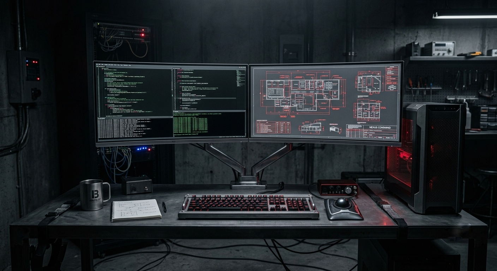
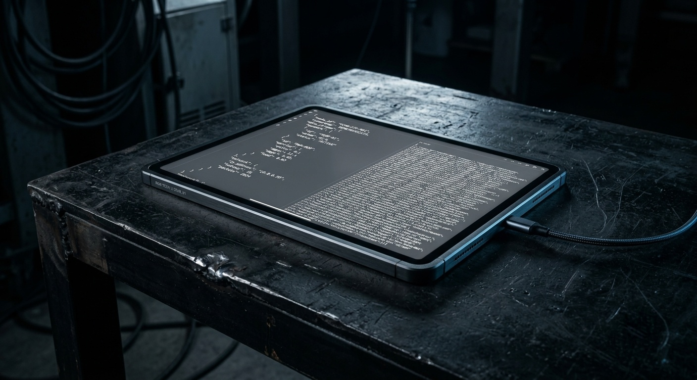
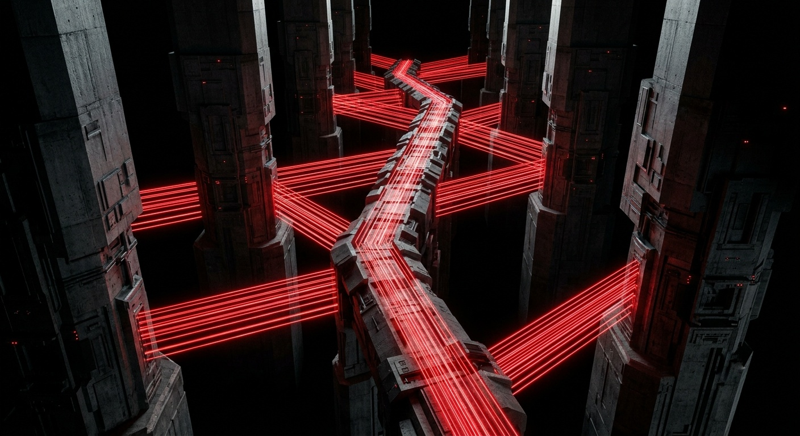
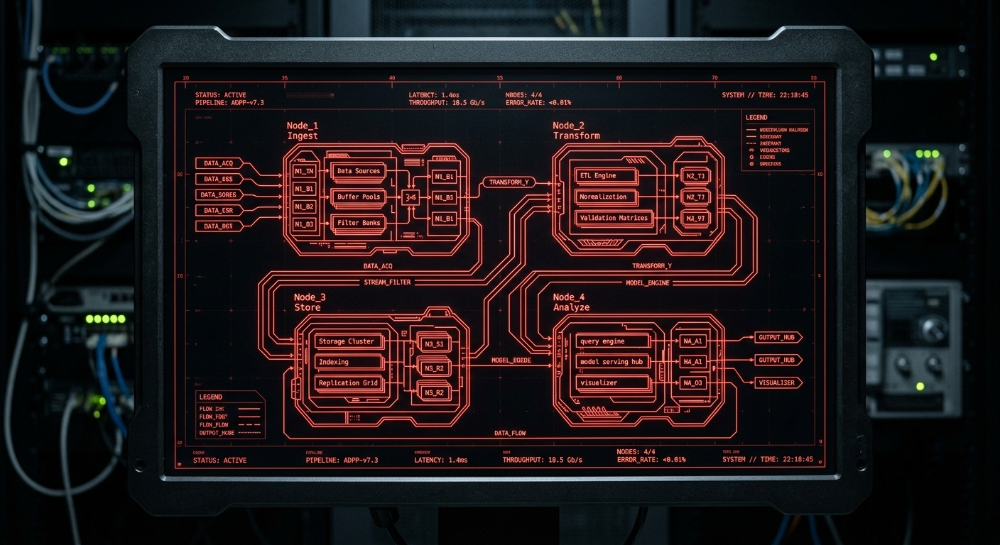
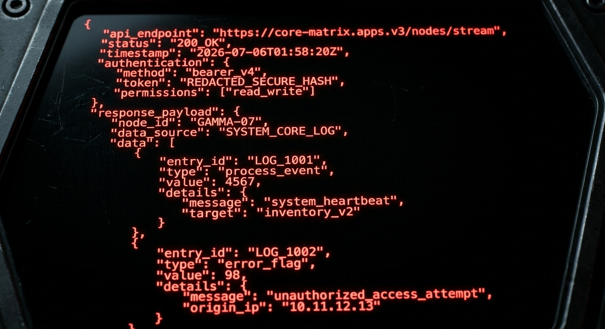
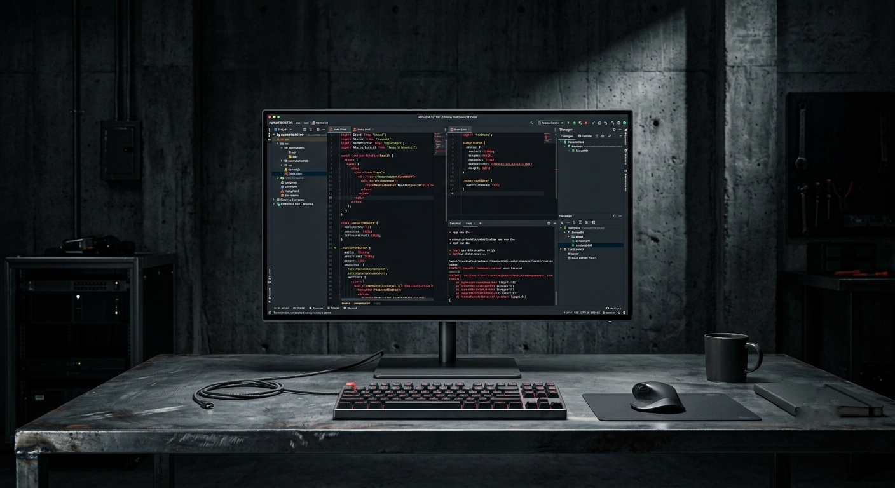
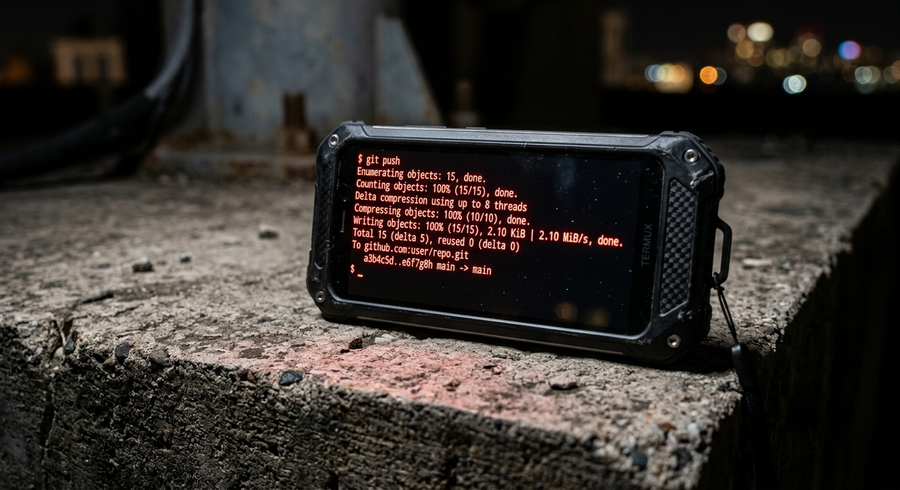

The Body Wasn't Built for One Chair
Eleven hours into a color grade, the pain stops being about the work and starts being about the chair. Stiff shoulders. A locked lower back. Eyes that have stared at the same 27-inch panel since sunrise. For years the assumption in this industry was simple: real work happens at a desk, on a machine powerful enough to carry it, and everything else is a compromise. That assumption is what breaks bodies.
The fix isn't a better chair. It's refusing to let one machine be the only place work can happen. A distributed workflow means the work follows the operator, not the other way around — from the studio, to a client's office, to a rooftop at midnight when the only thing open is a laptop and a coffee.
Three devices, three jobs — one autonomous chain of command.

The Heavy-Lifting Command Center
The only machine trusted with 2TB of visual archive and the compute weight of a full presentation build.

The Client Presentation Layer
Light enough to hand across a table, fast enough to open a live deck without apology.
The Tactical Handgun
Always holstered, always loaded — never the primary weapon, but never far from the hand.
From Local Drives to a Cloud-First Spine

An external hard drive is not a strategy. It's a single point of failure with a USB cable. The old habit — copy the shoot to the laptop, copy the laptop to a backup drive, hope nothing dies before the next copy — collapses the moment two devices need to see the same file at once.
The fix was to stop treating cloud storage as a backup and start treating it as the spine. Google Drive now holds the entire visual archive: raw stills, graded video, source files, the works. Every device — desk, tablet, phone — points at the same folder IDs. There is no "which laptop has the latest version" anymore, because there is only one version, and it lives in the cloud, not on any single machine.
This one decision is what makes the rest of the ecosystem possible. Once the data has a permanent, device-agnostic home, every other tool in the stack can be swapped, upgraded, or replaced without anything downstream breaking.
Four Apps, One Autonomous Pipeline
Four ordinary apps, none of them built for this purpose, wired together into something none of them do alone: a pipeline that fetches data, generates an API, syncs to the cloud, and deploys from a phone — with no dedicated backend and no server to maintain.

Google Sheets — The Database
No schema migrations. No code editor. A spreadsheet is the fastest database a one-person studio will ever need — every asset, every project, every client note logged as a row anyone on the team can add to from a phone, in transit, without touching a line of code.
It isn't elegant. It's fast, forgiving, and already installed on every device in the ecosystem — which makes it the correct choice, not the compromise.
Google Apps Script — The API Engine
A single doGet() function turns that spreadsheet into a live, structured JSON feed — reachable from anywhere, updating the moment a row changes, with zero servers to patch or pay for.
This is the quiet middleware layer of the whole ecosystem: not glamorous, barely visible, and the exact reason every other app in the stack can talk to the same source of truth without knowing anything about a spreadsheet.

GitHub Codespaces — The Cloud IDE
The local editor is gone. In its place: a full, high-end VS Code environment running in the browser, identical whether it's opened from the studio's main tower or a borrowed laptop in a client's lobby.
Heavy architecture work — the actual engineering of the 4-app ecosystem itself — happens here, in a container that spins up on demand and never depends on which physical machine is nearby.

Termux & Spck Editor — The Tactical Command
The phone stops being a viewer and becomes a real terminal. Termux turns Android into a raw command line — git push from a pocket, a quick fix shipped between meetings, an SSH session into deeper infrastructure without ever opening a laptop.
Spck Editor covers what Termux alone can't: syntax-highlighted edits and Git operations through an actual interface, for the moments a raw shell isn't fast enough. Together they make the phone the last mile of the pipeline — the tactical handgun, always holstered, always ready to fire a deploy.

Autonomy Is an Architecture, Not a Habit
None of this exists to look impressive on a diagram. It exists so an eleven-hour render doesn't have to happen in one chair, so a bug fix doesn't have to wait for a laptop to open, so a client demo can run from whatever device is already in the room.
The tablet, in this ecosystem, earns its keep as the presentation layer — the device that opens a live deck for a buyer without ever touching the machine that built it. That separation of duty, more than any single tool, is the actual architecture: not one powerful machine doing everything, but four ordinary ones, each doing exactly one job well.
Build the pipeline once, and the body stops paying the price for the work.